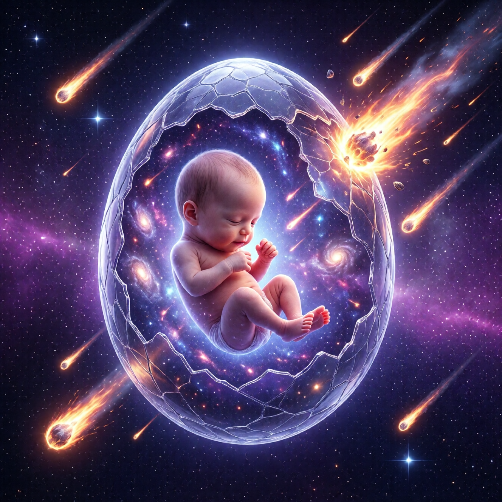

Зачем нужна скорлупа

Переосмысление врага
Ты, наверное, ждал главу о том, как победить скорлупу. Как разбить её. Как вырваться на свободу, показав средний палец системе.
Типа: «Вот враг! Вот меч! Вперёд, герой!»
Плохие новости: эта глава не об этом.
Хорошие новости: то, что ты узнаешь, гораздо полезнее.
Скорлупа — не враг. Скорлупа — инструмент.
Это как ругать молоток за то, что он тяжёлый. Да, тяжёлый. Но это не баг — это фича. Он так и должен работать.
Матрица ≠ Тюрьма
Давай разберём популярное заблуждение.
«Матрица — это тюрьма. Нас держат. Нужно сбежать. Мы — рабы системы. Агенты Смиты повсюду».
Звучит красиво. Даёт врага. Даёт цель. Даёт чувство, что ты — особенный, а система — плохая. Ты — Нео, мир — заговор против тебя.
Проблема: это неправда.
У тюрьмы есть тюремщик. Кто-то, кто хочет тебя удержать. У матрицы — нет.
Матрица — автоматическая система. Как инкубатор. Как стиральная машина. Ей всё равно.
Ты можешь злиться на стиральную машину, но она не заметит. Она просто крутит барабан. Ты можешь обижаться на инкубатор, но он не расстроится. Он просто поддерживает температуру.
Знаешь анекдот? Мужик орёт на банкомат: «Отдай мои деньги, сволочь!» Банкомату всё равно. У него нет чувств. У него есть алгоритм.
Четыре функции скорлупы
Раз скорлупа не враг — что она? Инструмент с конкретными функциями. Как тренажёр в зале. Он не для того, чтобы тебя мучить. Он для того, чтобы ты вырос.
1. Защита
Пока ты не готов — внешний мир тебя убьёт.
Не метафорически. Буквально.
Представь: достаёшь цыплёнка из яйца на третий день инкубации. Что будет? Он не побежит по полю с криком «Свобода!». Он умрёт. Потому что он — ещё не цыплёнок. Он — желе с зачатками органов.
Скорлупа держит безопасную среду. Постоянную температуру. Защиту от механических воздействий. Барьер от инфекций. Стабильность.
Цыплёнок без скорлупы — не свободный цыплёнок. Он — мёртвый цыплёнок. Или, как минимум, больной цыплёнок с кучей проблем.
Ты защищён не потому, что слабый. А потому, что ещё не сформировался. Это — не оскорбление. Это — факт.
Как ребёнок в утробе. Он не «заключённый». Он — растущий. И матка — не тюрьма. Она — инкубатор.
2. Питание
Желток — питательная среда. Из него ты берёшь всё необходимое для роста.
Всё, что ты называешь «жизнью» — события, люди, эмоции, успехи, провалы — это еда. Калории для роста. Белки для мышц. Витамины для развития.
Даже плохой опыт — питательный. Особенно плохой.
Страдание — протеин. Потери — витамины. Кризисы — минералы. Предательства — клетчатка.
Звучит цинично? Может быть. Но вспомни: когда ты больше всего вырос? Когда всё было хорошо? Или когда тебя накрыло?
Большинство людей скажут: «Когда накрыло». Развод. Увольнение. Болезнь. Потеря. Кризис.
Это не значит, что нужно искать страдания. Это значит, что когда они случаются — они не бессмысленны. Желток — не случайность. Он — дизайн.
3. Давление
Стенки давят — и это заставляет расти.
Представь тренажёрный зал. Чтобы мышцы росли, им нужно сопротивление. Нагрузка. Стресс. Без этого — нет развития.
Ты не накачаешь бицепс, лёжа на диване. Ты не научишься плавать, сидя на берегу. Ты не вылупишься, если стенки не давят.
Скорлупа — это нагрузка. Дискомфорт — часть дизайна, не ошибка.
Знаешь, почему дети богатых родителей часто вырастают «никакими»? Нет давления. Нет необходимости. Всё дано. Зачем напрягаться?
А дети, которым приходилось бороться — часто становятся сильнее. Не потому что страдание — хорошо. А потому что давление — развивает.
Когда тебе тесно — это не «мир плохой». Это «ты растёшь». Ботинок жмёт не потому что плохой ботинок. А потому что нога выросла.
4. Граница
Пока ты внутри — ты знаешь, где ты.
Это создаёт идентичность. Временную, но необходимую.
Представь океан. Где начинается одна волна и заканчивается другая? Нигде. Всё — одна вода. Но пока ты — капля в бутылке, ты знаешь: я — здесь. Не там. Здесь.
Без границ — нет формы. Без формы — нет развития. Без «я» — невозможно вырасти из «я».
Скорлупа говорит: «Ты — здесь. Не там. Здесь.» И это важно, пока ты не готов быть везде.
Парадокс: чтобы стать безграничным, нужно сначала иметь границы. Чтобы растворить эго, нужно сначала его сформировать. Нельзя отпустить то, чего нет.
Почему побег не работает
Многие пытаются сбежать из матрицы. Через медитацию, наркотики, отречение, бунт, переезд на Бали, уход в лес.
Результат? Они всё ещё внутри. Просто в другой части яйца. С другими декорациями. С другим самоощущением. Но — внутри.
Вот почему:
1. Некуда бежать изнутри яйца.Любое «куда» — всё ещё внутри. Ты можешь переместиться из центра желтка на периферию, но это не выход. Это — перемещение внутри камеры.
Как если бы заключённый переехал из одной камеры в другую и сказал: «Я сбежал!» Нет, друг. Ты просто в другой камере. С другим видом из окна.
2. Побег — это движение. Движение — энергия. Энергия кормит систему.Чем активнее ты «борешься» с матрицей — тем больше энергии вкладываешь. А энергия идёт... куда? В систему.
Это как бороться с китайской ловушкой для пальцев. Чем сильнее тянешь — тем крепче держит.
Система живёт вниманием. Ты борешься — ты даёшь внимание. Ты даёшь внимание — система укрепляется.
3. Борьба укрепляет стенки.Чем сильнее бьёшься — тем крепче скорлупа. Потому что ты её питаешь своим вниманием.
Против чего борешься — то укрепляешь. Это не метафора. Это механика.
Парадокс: чтобы выйти — нужно перестать пытаться выйти. Не сдаться. А перестать бороться. Это разные вещи.
История о мухе и окне
Муха бьётся в закрытое окно. Снова и снова. Она видит свет. Она хочет туда. Она уверена, что если ударится ещё сильнее — пробьёт.
Бззз. Бах. Бззз. Бах. Бззз. Бах.
Час. Два. Три. Пока не упадёт замертво.
Рядом — открытая дверь. Муха её не видит. Она слишком занята битьём в окно. Слишком сфокусирована на «враге». Слишком уверена, что знает, где выход.
Ты — не муха. У тебя есть то, чего нет у неё: способность остановиться и посмотреть.
Остановись. Перестань биться. Оглядись. А где здесь дверь?
Спойлер: дверь — не там, где ты бьёшься. Она в другом месте. И чтобы её увидеть, нужно перестать смотреть туда, куда смотришь.
Благодарность скорлупе
Это сложно. Это непривычно. Но попробуй.
Представь: ты всю жизнь воевал с врагом. И вдруг понимаешь — это не враг. Это тренер. Жёсткий, бескомпромиссный — но тренер.
Скажи — вслух или про себя:
«Спасибо, скорлупа. Ты держала меня в безопасности. Ты давала границы, когда я не знал, кто я. Ты защищала, когда я был слаб. Ты давила, чтобы я рос. Я скоро выйду. Но пока — спасибо.»Заметь, что изменится внутри. Может быть — ничего. А может быть — что-то сдвинется.
Это не капитуляция. Это — признание реальности. Скорлупа делала свою работу. И делала хорошо. Ты жив. Ты вырос. Ты читаешь эту книгу. Значит — работает.
Враг, которого ты ненавидишь, держит тебя в себе. Инструмент, который ты принимаешь, служит тебе.
Разница — не в скорлупе. Разница — в твоём отношении.
Когда скорлупа становится проблемой
При всём сказанном — есть момент, когда скорлупа начинает мешать.
Это происходит, когда ты перерос.
Как одежда. Детская футболка отлично служила в пять лет. Но если ты в сорок пытаешься её надеть — она душит.
Не футболка стала плохой. Ты стал большой.
Признаки, что ты перерос:
- То, что раньше защищало — теперь душит. Отношения, которые были тёплыми — стали клеткой.
- То, что раньше питало — теперь тошнит. Работа, которая давала смысл — стала бессмысленной.
- То, что раньше давало форму — теперь ломает. Убеждения, которые помогали — стали тюрьмой.
Это — нормально. Это — следующая стадия. Это — знак, что пора выходить.
Но важно понимать разницу:
| До созревания | После созревания | |---------------|------------------| | Скорлупа защищает | Скорлупа душит | | Дискомфорт = рост | Дискомфорт = сигнал к выходу | | Борьба = трата энергии | Давление изнутри = естественный процесс | | «Мне плохо» = я расту | «Мне плохо» = я перерос |
Как отличить? Проверь: ты жалуешься или ты действуешь? Ты страдаешь или ты клюёшь?
Жалоба — это «до созревания». Клёв — это «после».
Что делать?
Ничего.
Пока.
Серьёзно.
Я понимаю — это раздражает. «Я прочитал четыре главы, а мне говорят — ничего не делай».
Но на этом этапе задача — понять. Не бороться. Не принимать. Просто — понять.
Это как диагностика перед операцией. Ты не режешь сразу. Ты сначала разбираешься, что происходит. Где болит. Почему болит. Что резать.
Скорлупа есть. Она делает свою работу. Ты внутри. Это — факт.
Признай это. Не как трагедию. Не как несправедливость. Как факт.
И когда ты по-настоящему это примешь — начнётся следующий этап.
Клювом изнутри — не лбом снаружи.
Практика: Карта стенок
Возьми бумагу. Реальную. С ручкой.
Нарисуй круг — это скорлупа.
Внутри напиши всё, что тебя ограничивает:
Физические ограничения:- Тело (здоровье, внешность, возраст)
- Место (город, страна, квартира)
- Деньги (сколько есть, сколько нужно)
- Семья (ожидания, обязательства)
- Работа (график, начальник, коллеги)
- Нормы (что принято, что не принято)
- Страхи (чего боишься)
- Убеждения (во что веришь)
- Паттерны (что повторяешь)
Теперь посмотри на этот список.
Для каждого пункта спроси: это защищает меня? Или уже душит?
Отметь разным цветом:
- Зелёный — защищает, пусть будет
- Жёлтый — непонятно, надо разобраться
- Красный — душит, пора отпустить
Это — твоя карта скорлупы. Не для борьбы. Для понимания.
Не для того, чтобы завтра всё бросить. Для того, чтобы видеть — ясно, без иллюзий — что есть.